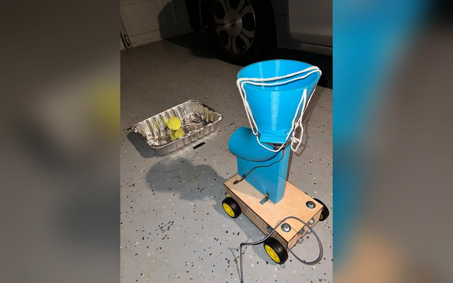

Autonomous Tennis-Ball Retrieval Vehicle
A funnel-and-trapdoor vehicle that catches a dropped tennis ball, drives to a drop-off area, and releases the ball into the target.
- Team design with a 3D-printed funnel and trapdoor on a laser-cut wood base.
- Servo chosen from a SolidWorks motion study; Arduino drives to the drop-off zone and releases the ball.
View details →